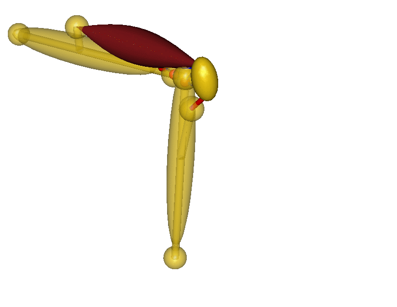

Getting Started with AnyPyTools¶
Running a simple macro¶

For the sake of the tutorial we will use a small ‘toy’ model of a simplified knee joint (see the figure.) The model is defined in the file Knee.any, which is placed in the current working directory.
Next, let us run the model from python. First, we import the AnyPyProcess class and create an instance of the class.
[1]:
from anypytools import AnyPyProcess
app = AnyPyProcess()
Next, we need to instruct the AnyBody Modelling System to load the and run the model. We do this using AnyScript macro commands. These are short commands that can automate operations in the AnyBody Modeling System (AMS). Operation that are normally done by pointing and clicking in the AMS graphical user interface.
You can read more on AnyScript macros in the “User Interface Features” tutorial that accompanies the AnyBody Modeling System.
Now we define an AnyScript macro that we want to run on the model.
load "Knee.any"
operation Main.MyStudy.Kinematics
run
The macro will command AnyBody to load the model and run the Kinematics operation.
The macro is executed by parsing it to the start_macro() method of the AnyPyProcess object.
[2]:
macrolist = [
'load "Knee.any"',
'operation Main.MyStudy.Kinematics',
'run',
]
app.start_macro(macrolist);
Completed: 1
Running multiple macros¶
It is easy to run multiple macros by adding an extra set of macro commands to the macro list.
[3]:
macrolist = [
['load "Knee.any"',
'operation Main.MyStudy.Kinematics',
'run'],
['load "Knee.any"',
'operation Main.MyStudy.InverseDynamics',
'run'],
]
app.start_macro(macrolist);
Completed: 2
Parallel execution¶
Notice that AnyPyProcess will run the anyscript macros in parallel. Modern computers have multiple cores, but a single AnyBody instance can only utilize a single core, leaving us with a great potential for speeding things up through parallelization.
To test this, let us create ten macros in a for-loop.
[4]:
macrolist = []
for i in range(40):
macro = [
'load "Knee.any"',
'operation Main.MyStudy.InverseDynamics',
'run',
]
macrolist.append(macro)
AnyPyProcess has a parameter ‘num_processes’ that controls the number of parallel processes. Let us try a small example to see the difference in speed:
[5]:
# First sequentially
app = AnyPyProcess(num_processes = 1)
app.start_macro(macrolist);
Completed: 40
[6]:
# Then with parallization
app = AnyPyProcess(num_processes = 4)
app.start_macro(macrolist);
Completed: 40
Note: In general you should not user a num_processes larger than the number of cores in your computer.
Getting data from the AnyBody Model¶
In the following macro, we have added a new class operation to ‘Dump’ the result of the maximum muscle activity. The start_macro method will return all the dumped variables:
[7]:
import numpy as np
macrolist = [
'load "Knee.any"',
'operation Main.MyStudy.InverseDynamics',
'run',
'classoperation Main.MyStudy.Output.MaxMuscleActivity "Dump"',
]
results = app.start_macro(macrolist)
Completed: 1
We can export more variables by adding more classoperation. But there is a better way of doing this, as we shall see in the next tutorials.
Finally, to make a plot we import the matplotlib library, and enable inline figures.
[8]:
max_muscle_act = results[0]['Main.MyStudy.Output.MaxMuscleActivity']
[9]:
import numpy as np
import matplotlib.pyplot as plt
%matplotlib inline
plt.plot(max_muscle_act);